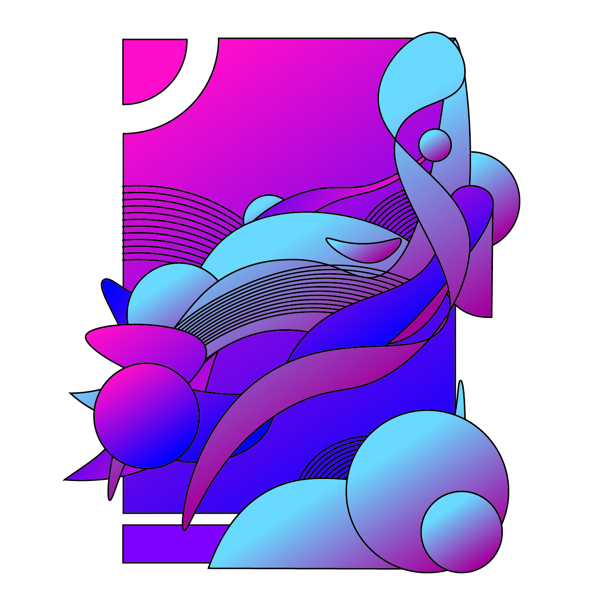

Name: Gradian Mesh
Medium: Adobe Illustrator
Dimension: 1200x1200
Gradian Mesh was created as an assignment for ART 74. This pieces was created in Adobe Illustrator with the use of vector shapes.
There were no significant idea behind the pieces during the making of it. It was more of a formal exploration - an adventure; playing with colors, lines, and shapes, each previous stroke inspires the next, until
everything connects into an aesthetically-pleasing coherent piece.